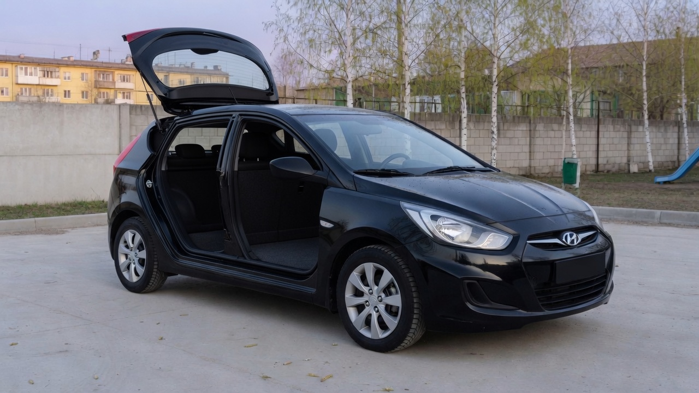

Хэтчбек
Корма короче, чем у седана тех лет. Во дворе это чувствуется сразу. Багажник открывается люком, и крупные сумки всё равно входят.

Одна машина, которую он знает
Кирилл смотрит и на другие кузова, но руки помнят именно этот: чёрный Solaris 2013 года, пять дверей, серебристые диски.
Корма короче, чем у седана тех лет. Во дворе это чувствуется сразу. Багажник открывается люком, и крупные сумки всё равно входят.

Это лицо до обновления: широкая решётка, вытянутая фара, без более поздней оптики. Кирилл узнаёт его с другого конца двора.

Пыль на нём честная. После мойки берёзы снова отражаются в двери, и машина на минуту кажется глубже.
На что он смотрит у других
На парковке Кирилл задерживается не у самых громких машин. Ему интересно, как сидит водитель и где у хэтчбека заканчивается стекло пятой двери.
Свой Solaris он уже разобрал по мелочам: зеркало в цвет кузова, ручка, линия под дверью, антенна на крыше. Седан был бы привычнее отцу, Кириллу ближе короткая корма.
Двигатель он не обсуждает в тетради. Там кузов, свет, шины и дорога. Этого ему пока достаточно.
